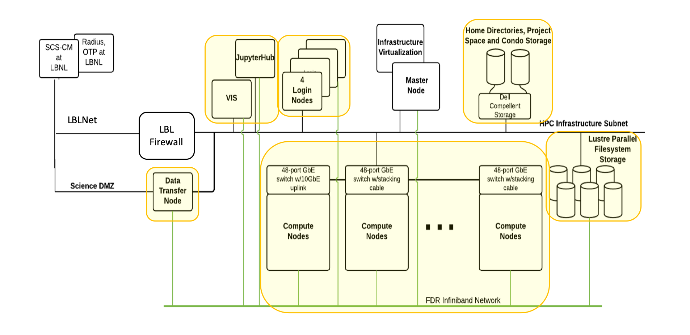
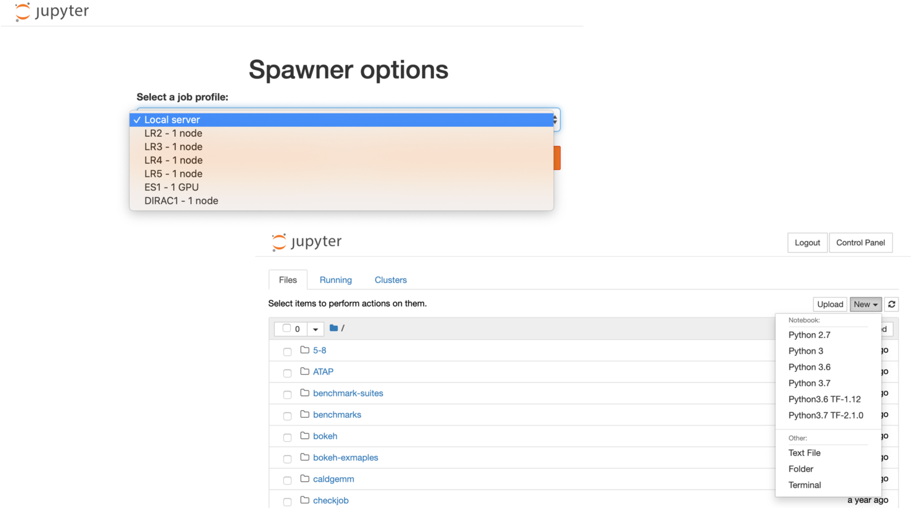
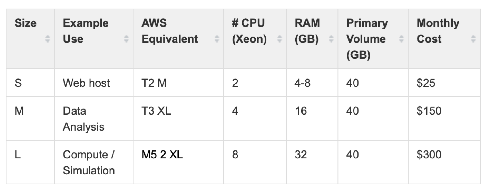
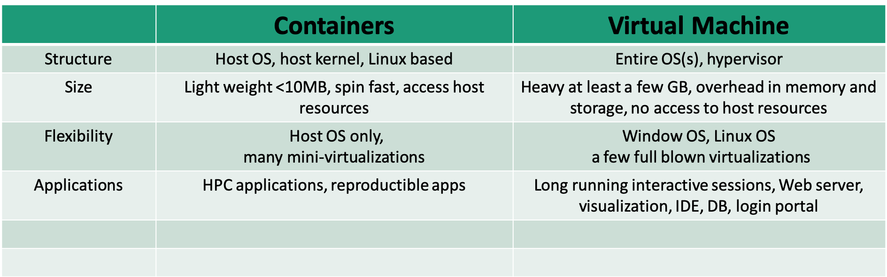

Outline
- Lawrencium Supercluster overview
- Computing resources & services
- Container technology overview
- Build singularity containers
- Run singularity containers on Lawrencium
Lawrencium Cluster Overview

Accounts on Lawrencium
Three types of Project Accounts
- PI Computing Allowance (PCA) account: free 300K SUs per year (pc_xxx)
- Condo account: PIs buy in compute nodes to the general condo pool (lr_xxx)
- Recharge account: with minimal recharge rate ~ $0.01/SU (ac_xxx)
https://sites.google.com/a/lbl.gov/hpc/getting-an-account
User accounts
- User account request
- User agreement consent
https://sites.google.com/a/lbl.gov/hpc/getting-an-account
Softwre Module Farm
Module commands
- module purge: clear user’s work environment
- module avail: check available software packages
- module load xxx: load a package
- module list: check currently loaded software
- Users may install their own software
https://sites.google.com/a/lbl.gov/high-performance-computing-services-group/getting-started/sl6-module-farm-guide
SLURM: Resource Manager & Job Scheduler
Jub Submission
- sbatch: submit a job to the batch queue system
sbatch myjob.sh
- srun: request an interactive node(s) and login automatically
srun -A ac_xxx -p lr5 -q lr_normal -t 1:0:0 --pty bash
- salloc : request an interactive node(s)
salloc –A pc_xxx –p lr6 –q lr_debug –t 0:30:0
Job Monitoring
- sinfo: check status of partitions and nodes (idle, allocated, drain, down)
sinfo –r –p lr6
- squeue: check jobs in the batch queuing system (R or PD)
squeue –u $USER
- sacct: check job information or history
sacct -X -o ‘jobid,user,partition,nodelist,stat’
scancel jobID
- Check slurm association, such as qos, account, partition
sacctmgr show association user=wfeinstein -p
perceus-00|ac_test|wfeinstein|lr6|1||||||||||||lr_debug,lr_lowprio,lr_normal|||
perceus-00|ac_test|wfeinstein|lr5|1||||||||||||lr_debug,lr_lowprio,lr_normal|||
perceus-00|pc_test|wfeinstein|lr4|1||||||||||||lr_debug,lr_lowprio,lr_normal|||
perceus-00|lr_test|wfeinstein|lr3|1||||||||||||lr_debug,lr_lowprio,lr_normal,te
perceus-00|scs|wfeinstein|es1|1||||||||||||es_debug,es_lowprio,es_normal|||
https://sites.google.com/a/lbl.gov/high-performance-computing-services-group/scheduler/slurm-usage-instructions
Services (1)
- Designate data transfer node lrc-xfer.lbl.gov
- scp -r /your/source/file $USER@lrc-xder.lbl.gov:/cluster/path
- rsync -avzh /your/source/file $USER @lrc-xfer.lbl.gov:/cluster/path
- Globus Online provide secured unified interface for data transfer
- endpoint lbn#lrc, Globus Connect, AWS S3 connector
- Visualization and remote desktop node viz.lbl.gov
Service (2): Jupyterhub
LRC Jupyterhub

Services (3): Cloud Computing
- LBNL has a master payer program for cloud services on Amazon Web Services (AWS) and Google Cloud Platform (GCP).
- No charge to have an account in the program
- Charges only for actual usage of cloud services like storage or compute
- Monthly billing for cloud usage are direct to your PID via recharge mechanism
- Simple enrollment process.
- De-enrollment only changes the billing setup in your account, and your account will continue to be active.
- Complete control of your own AWS or GCP dashboard, your data, tools, and services.
AWS & GCP Services
- AWS and GCP make discounts available to LBNL users.
| Overall |
7% |
13% |
|
| Data Egress |
15% |
25% |
|
- AWS, restrictions apply
- Over 125 people at LBNL with cloud accounts on AWS and GCP.
- Mostly use virtual machines and storage, containers, ML, AI, and data visualization
- To set up a cloud account on either AWS or GCP, send email to scienceit@lbl.gov
Virtual Machine Services

More information of VM click here
Containerization
- Technology of putting an application and all of its dependencies into a single package.
- Portable, shareable, and reproducible.
- Your application brings its environment with it.
Application
- Package an analysis pipeline so that it runs on your laptop, in the cloud, and in HPC environment to produce the same result.
- Publish a paper and include a link to a container with all of the data and software that you used so that others can easily reproduce your results.
- Install and run an application that requires a complicated stack of dependencies
- Legacy codes require outdated OS
Container vs. Virtual Machine

Singularity Technology
- Open-source computer software that encapsulates an application and all its dependencies into a single image
- Bring containers and reproducibility to scientific computing and HPC
- Developed by Greg Kurtzer
- Typically users have a build system as root users, but may not be root users on a production system
Docker
Learn more docker
Singularity Workflow
- Install Singularity on a local machine
- Build Singularity images locally with a root permission
- Transfer images to LRC clusters
- Run containers on the cluster
- Root privilege is not permitted
Singularity Installation
OS platforms
- Linux
- Mac
- Window
Refer to instructions here for details
Test your installation:
$ singularity --version
singularity version 3.2.1-1
$ singularity run docker://godlovedc/lolcow
______________________________________
/ A tall, dark stranger will have more \
\ fun than you. /
--------------------------------------
\ ^__^
\ (oo)\_______
(__)\ )\/\
||----w |
|| ||
Create Singularity Containers
- Build directly from pre-built docker images
- More involved using docker images form other external resources
- Build using definition files or recipes
Singularity pull directly from docker:// & shub://
- No root/sudo privilege is needed
- Create/download immutable squashfs images/containers
singularity pull --help
- Docker Hub: Pull a container from Docker Hub.
$ singularity pull docker://ubuntu:18.04
$ singularity pull docker://gcc:7.2.0
- Singularity Hub: If no tag is specified, the master branch of the repository is used
$ singularity pull hello-world.sif shub://singularityhub/hello-world
Run Singularity with shell, run, exec
- shell sub-command: invokes an interactive shell within a container
singularity shell hello-world.sif
- run sub-command: executes the container’s runscript
singularity run hello-world.sif
- exec sub-command: execute an arbitrary command within container
singularity exec hello-world.sif cat /etc/os-release
Singularity pull when Docker Containers Provided by Other External docker repositories
Steps to build singularity containers from NGC:
- Pull a docker image locally (e.g. pgi compiler from NGC)
$ docker pull nvcr.io/hpc/pgi-compilers:ce
.....
$ docker images
REPOSITORY TAG IMAGE ID CREATED SIZE
nvcr.io/hpc/pgi-compiler ce c13ce6cf7f66 6 months ago 9.9GB
openmpi3.1 latest 08a5518bb344 9 months ago 14.3GB
registry 2 f32a97de94e1 15 months ago 25.8MB
...
Steps to build singularity containers from NGC:
$ singularity build pgi.sif docker-daemon://nvcr.io/hpc/pgi-compilers:ce
$ ls
Dokerfile hello-world.sif pgi.sif saxpy.c Singularity
$ singularity exec pgi.sif pgcc -o saxpy -acc -Minfo saxpy.c
saxpy:
9, Loop is parallelizable
Generating Tesla code
9, #pragma acc loop gang, vector(128) /* blockIdx.x threadIdx.x */
9, FMA (fused multiply-add) instruction(s) generated
...
$ singularity exec pgi.sif ./saxpy
y[0] = 2.000000
Another example of using docker containers from AWS
Singularity build
- Root/sudo privilege is needed
singularity build --help
- Build from a definition file
sudo singularity --debug build mycontainer.sif Singularity
Defination File/Recipe
Bootstrap: docker
#library, docker, shub, localimage, yum, debootstrap, arch, busybox, zypper
From: ubuntu
# used singularity run-help
%help
Hello. I'm in the container.
# executed on host after the base OS is installed.
%setup
touch ${SINGULARITY_ROOTFS}/tacos.txt
echo “I love avocado” >> avocados.txt
# copy files from your host system into the container
%files
avocados.txt /opt
%environment
export NAME=avocado
# executed within the container after the base OS is installed at build time
#install new software and libraries, config files, directories, etc
%post
echo 'export Avocado=TRUE >> $SINGULARITY_ENVIRONMENT
# executed when the container image is run: singularity run
%runscript
echo "Hello! Arguments received: $* \n"
exec echo "$@"
More information of singularity recipes
Singularity Build Rewritable Sandbox
- Can be built from a recipe or existing container
- Used to develop, test, and make changes, then build or convert it into a standard image
sudo singularity build --sandbox build gccbox docker://gcc:7.2.0
sudo singularity build --sandbox build test-box Singularity
- When you want to alter your image, you can use commands like shell, exec, run, with the –writable option
sudo singularity shell --writable test-box
- Convert a sandbox to an immutable final container:
sudo singularity build test-box.sif test-box
Inspect Containers
- To check how a image is built, running script and environment variables..
singularity inspect [options] image_name
--lablels
--runscript
--deffile
--environment
e.g. singularity inspect --deffile mycontainer.sif
Singularity Python (spython)
- Python API for Singularity containers
- Convert Dockerfile to Singularity def
spython recipe Dockerfile > dock2sif.def
Run Singularity Containers on Lawrencium
- File transfer to LRC cluster
scp xxx.sif $USER@lrc-xfer.lbl.gov:/your/path/on/cluster
Job Submission Example
#!/bin/bash -l
#SBATCH --job-name=container-test
#SBATCH --partition=lr5
#SBATCH --account=ac_xxx
#SBATCH --qos=lr_normal
#SBATCH --nodes=1
#SBATCH --time=1-2:0:0
cd $SLURM_SUBMIT_DIR
singularity exec mycontainer.sif cat /etc/os-release
Container Bind Path
- Singularity allow mapping directories on host to directories within container
- Easy data access within containers
- System-defined bind paths on LRC
- /global/home/users/
- /global/scratch/
- User can define own bind paths:
- e.g.: mount /host/path/ on the host to /container/path inside the container
-B /host/path/:/container/path
singularity run --nv -B /global/home/users/$USER:/tmp pytorch_19_12_py3.sif ls /tmp
Run GPU and MPI Containers
- Singularity supports NVIDIA’s CUDA GPU compute framework or AMD’s ROCm solution
- –nv enables NVIDIA GPU support in Singularity
- Remember to request a GPU node from the ES1 partition
singularity exec --nv pytorch_19_12_py3.sif python -c "import torch; print(torch.__version__)"
1.4.0a0+a5b4d78
Run MPI Containers
- If launch on multiple nodes, MPI libraries on the host and inside the container need to match
- If launch on one node, only MPI library inside the container is called
Exercise
- singularity pull hello-world.sif shub://singularityhub/hello-world
- generate hello-world.def or generate a sandbox to start with
- add /data directory inside the container
- build a new image hello-world-new.sif
- bind /home/$USER on host to /data inside container
- ls /data inside the new container
Getting help
Please fill out Training Survey to get your comments and help us improve.